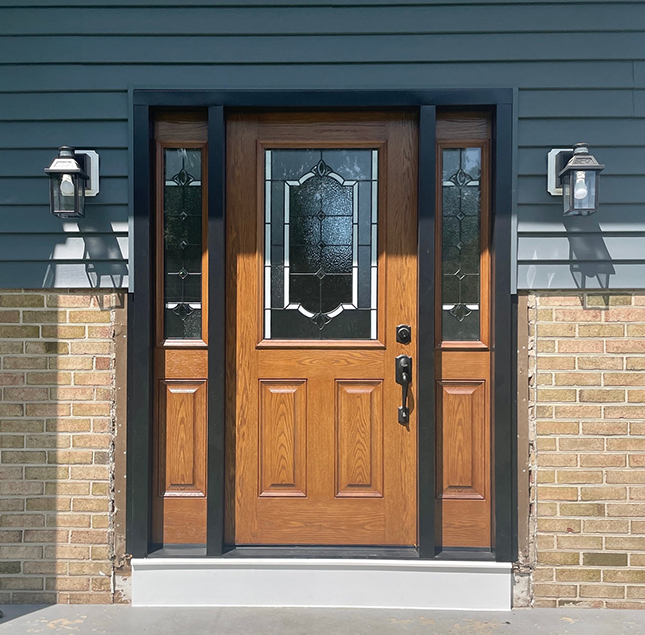

Exterior Door Installation and Replacement
Explore our selection of high-quality entry doors, meticulously created for exceptional structural integrity, security, and energy efficiency. Our doors provide peace of mind, ensuring your home remains safe and comfortable while reducing energy costs. With a focus on sophistication and style, choose from a wide variety of options to suit your preferences. Trust us to enhance your home's entryway with professional-grade solutions.
Why replace your doors?
Energy efficiency
Enhanced Security
 Increased curb appeal
Increased curb appeal